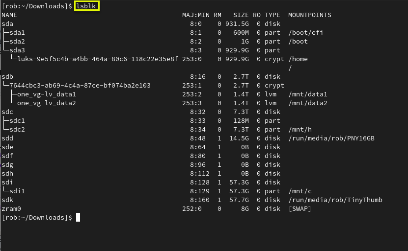
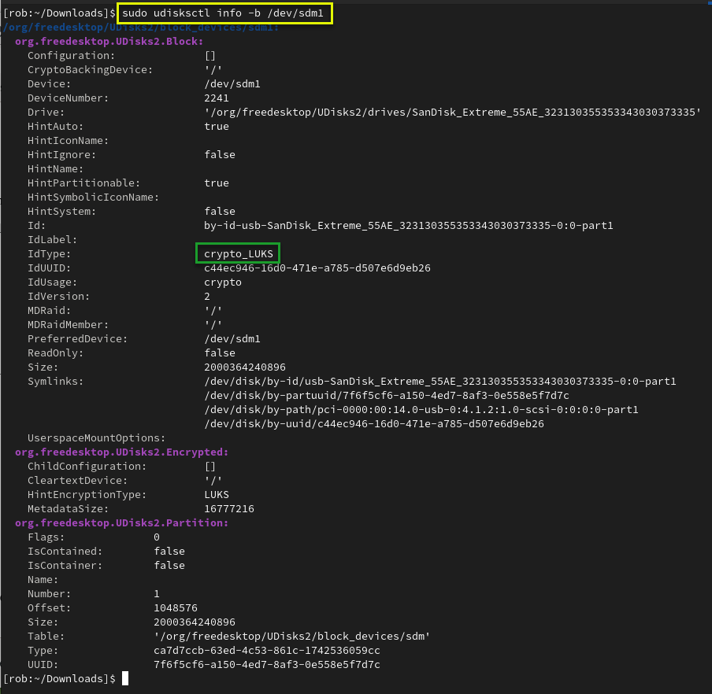
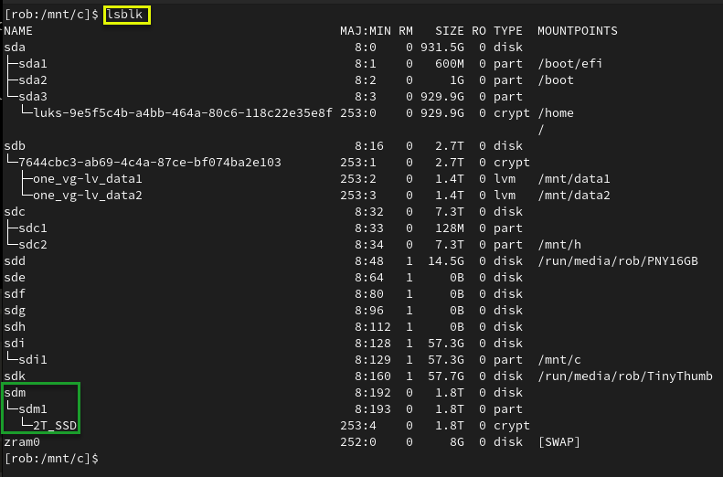
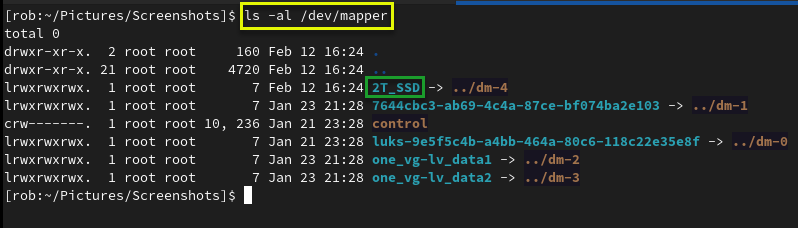
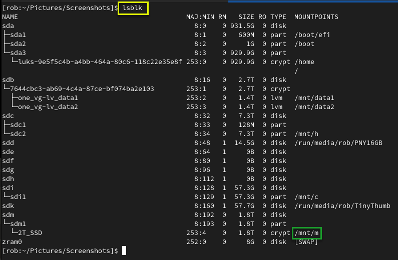
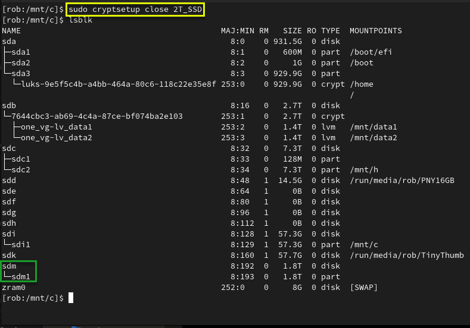
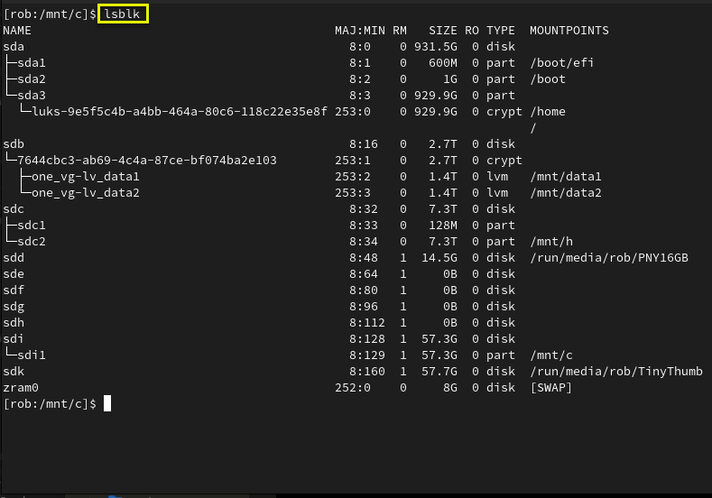

Mounting and Unmounting a LUKS Encrypted USB Volume
Use the following commands to view the disks/USB devices:
- blkid
- duf
- lsblk
- lsblk -a
- lsblk -o +UUID,PARTUUID
- lsblk -o +UUID,FSTYPE,PARTUUID
- ls -lF /dev/disk/by-id
- sudo lshw -short -C disk
- sudo udisksctl info -b /dev/??
01. USB drive has not been inserted (plugged in) yet.
$ To see volumes type: lsblk

02. GUI password prompt when drive is plugged in (I clicked cancel to demonstrate mounting from commandline).

03. USB drive inserted (plugged in) and showing as /dev/sdm1.
$ To see volumes type: lsblk
 and showing as /dev/sdm1. Your volume name may be different than /dev/sdm1.")
04. udiskctl showing /dev/sdm1 as "crypto_LUKS"..
$ Check the volume information type: sudo udisksctl info -b /dev/sdm1

05. Trying to mount the locked LUKS encrypted volume (Failed because volume is locked. Run cryptsetup first to unlock.).

06. Running cryptsetup to unlock the encrypted volume (Assigning alias of "2T_SSD" to reference the unlocked volume. The alias can be whatever you want.).
$ To open the encrypted filesystem type: sudo cryptsetup luksOpen /dev/sdm1 2T_SSD

07. Decrypted volume showing as 2T_SSD, but not yet mounted.
$ To see the unlocked volume type: lsblk

08. Decrypted volume alias "2T_SSD" showing under /dev/mapper.
$ Check /dev/mapper to see if your alias is there: ls -al /dev/mapper

09. Password prompt when using sudo to mount decrypted 2T_SSD volume to /dev/m.
$ To mount your alias to a mount point type: sudo mount /dev/mapper/2T_SSD /mnt/m

10. Decrypted volume showing unlocked and mounted at /mnt/m.
$ To see volumes type: lsblk

11. Unmounting /mnt/m.
$ To unmount th volume type: /mnt/m

12. Closing cryptsetup session (Locking it).
$ To close the volume type: sudo cryptsetup close 2T_SSD

13. USB drive unmounted and unplugged from system.
$ To see volumes type: lsblk
